Knock knock, who's there
Delivery
A few months ago, my friend asked me to get this civic off of his property. He had been driving it some while back when it lost power on the highway, and then shutoff. He said it was low on oil, but otherwise he didn't know what was wrong with it.
 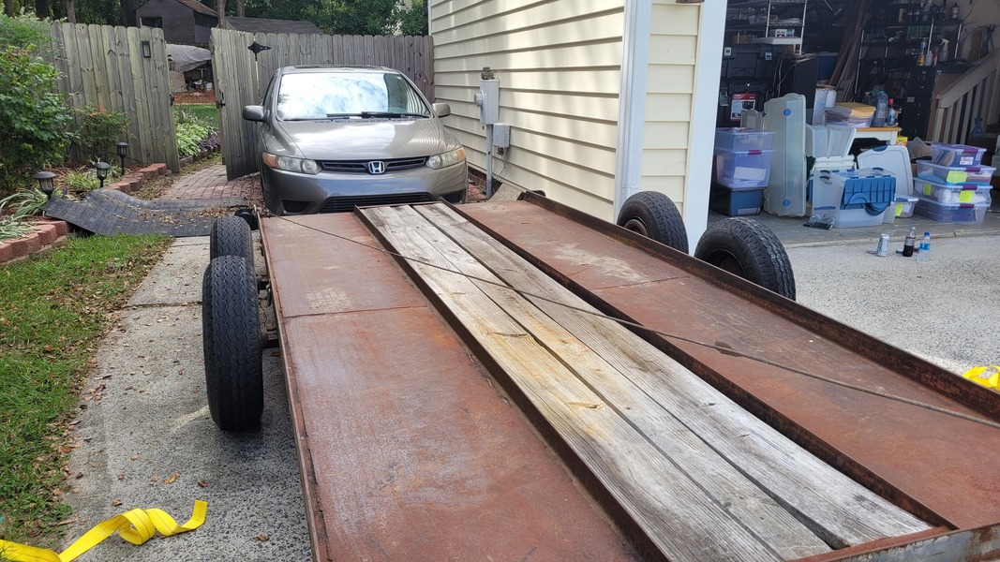
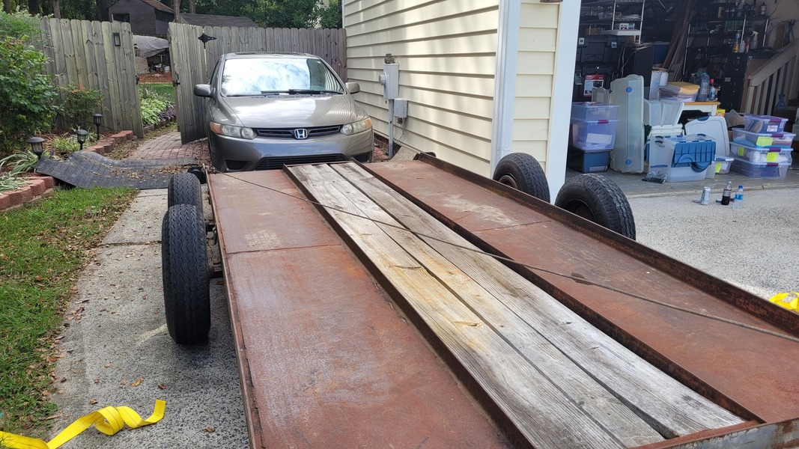
He said it wouldn't start
So I hooked up 2 truck-sized batteries in parallel with some huge cables... And it started!
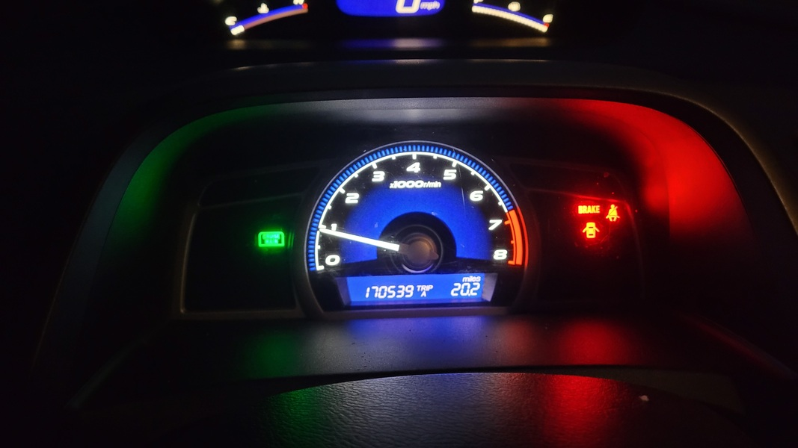!!!!!Insert video here!
!!!!!Insert video2 here!
Yeah, that sound, it ain't good. Knock knock, who's there?
So, off to the pick'n'pull
I kept an eye on the local pick'n'pull's inventory for a Civic to show up with an R18 engine. Finally, one showed up.
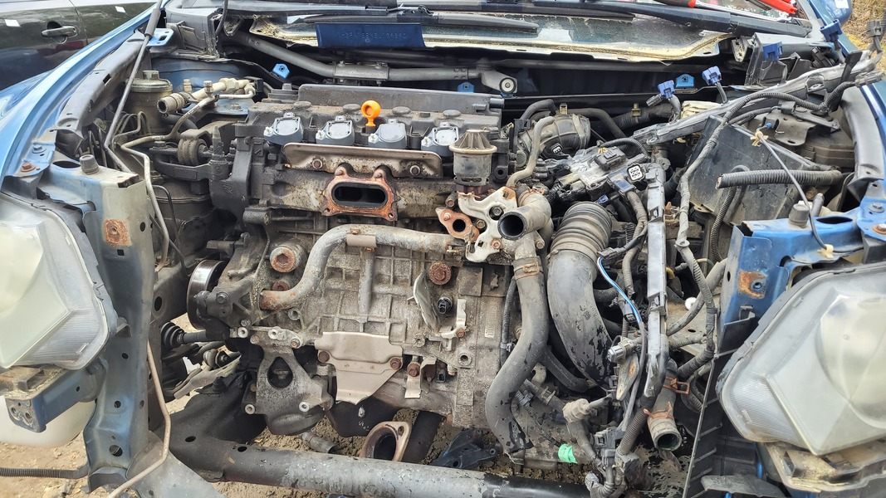With my dad's help, we started removing the extra components we didn't need, and disconnecting any electrical connections and hoses that were holding the engine in.
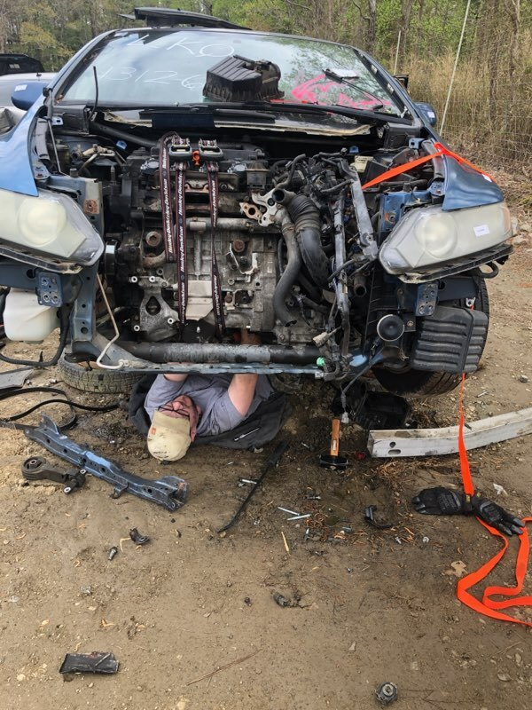Yeah, it was a bit sketchy hanging out underneath the Civic with so much of it disconnected and ready to pull. But it had to be done. Then, we lifted.
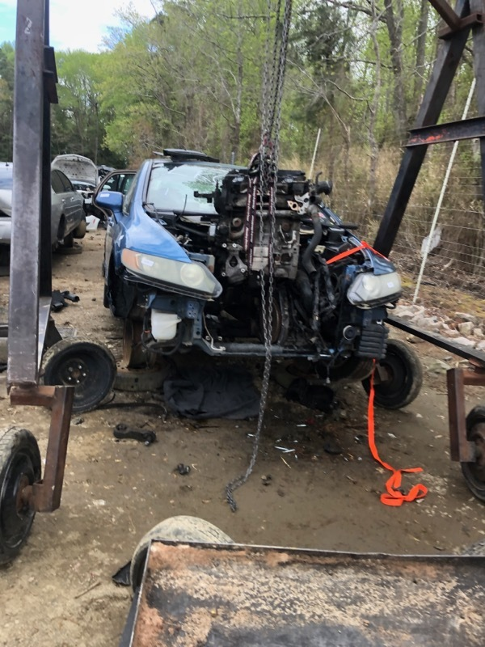We had some trouble getting the torque converter to stay in the transmission, but eventually got it separated and the engine out.
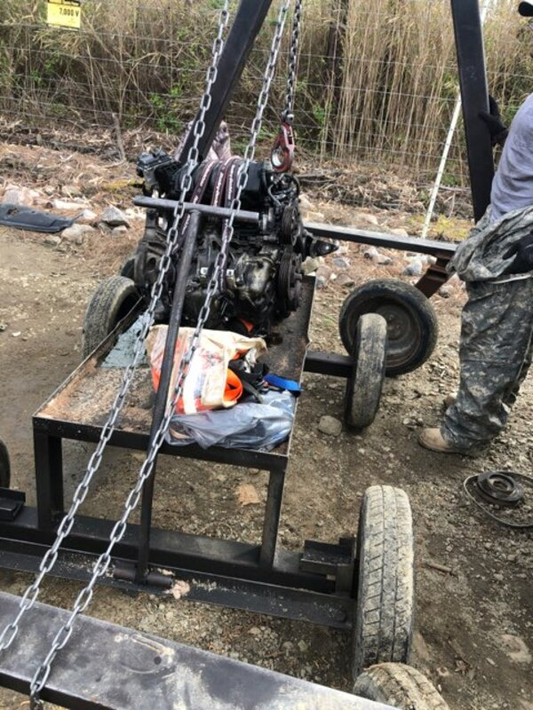And checked out of the pick'n'pull! We actually were able to get from 0 to check-out in 3 hours! I was pretty proud of my Dad and I to pull that off.
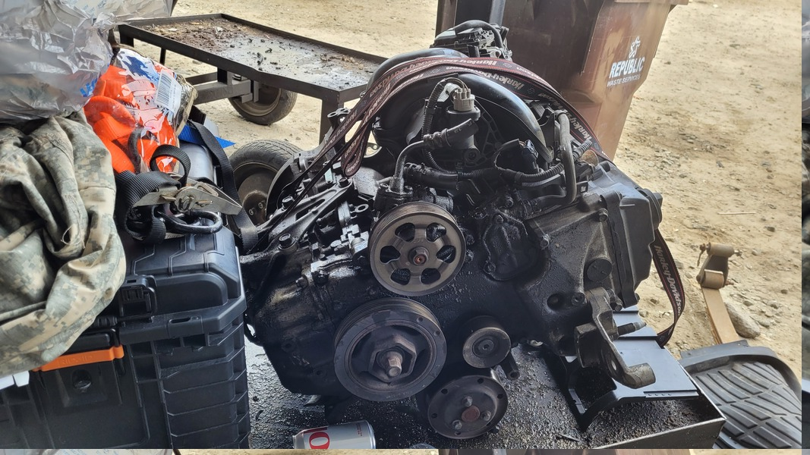And finally we were on the way home, engine secured in the truck bed.
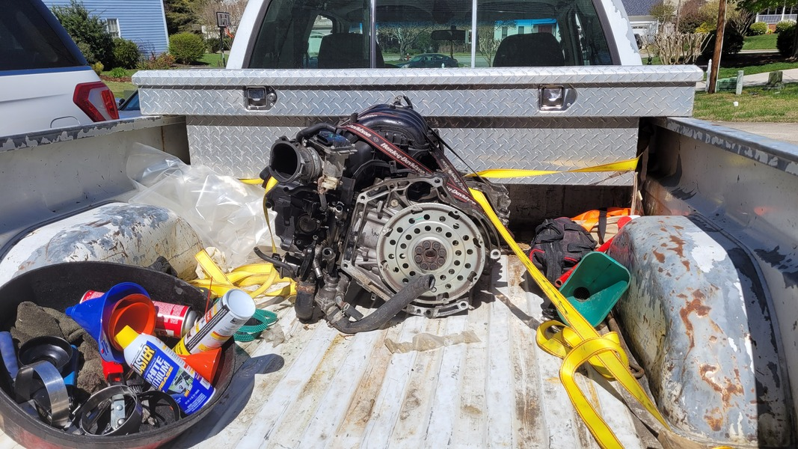Pulling the victim's engine
While we were able to pull the engine in the junkyard rather rapidly, I had to ensure that I didn't damage anything pulling the victim's engine. I wanted the install of the replacement engine to go as smoothly as possible.
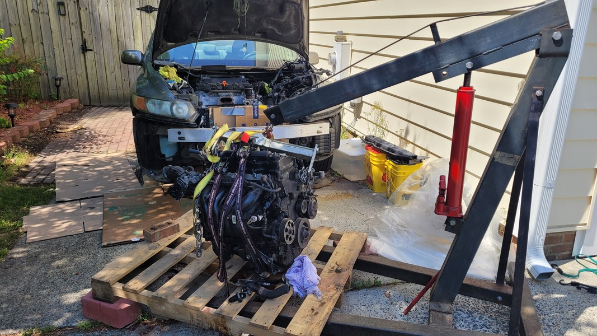I knew it would take some time, so I set up a pallet to keep the donor engine high and dry while I was working on preparing the blown engine to be pulled.
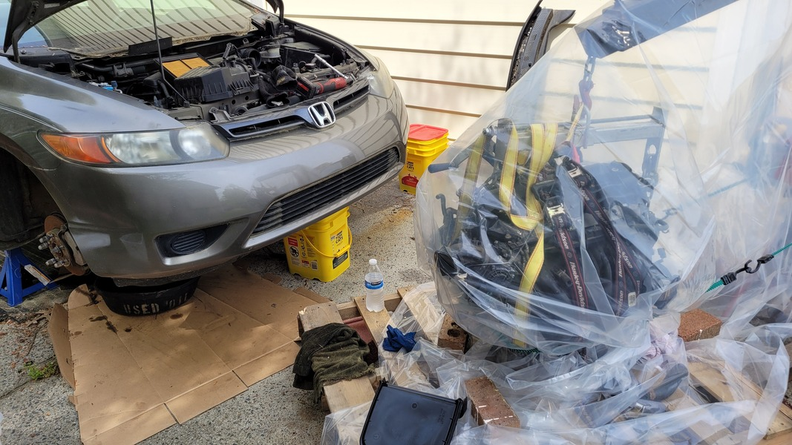I wrapped up the donor engine with some plastic to protect it from any potential rain. I'm taking my time, and don't want to rush or burn out.
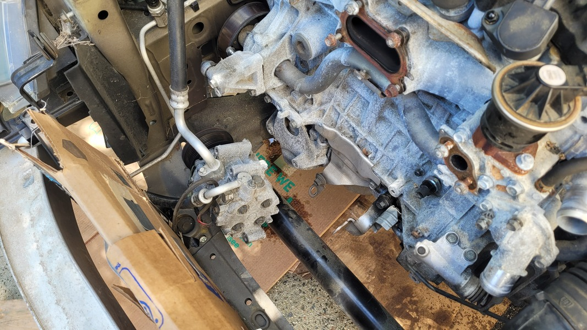I didn't want to have to evacuate or refill the A/C system or power steering (not pictured), so I made sure they were out of the way for pulling the engine.
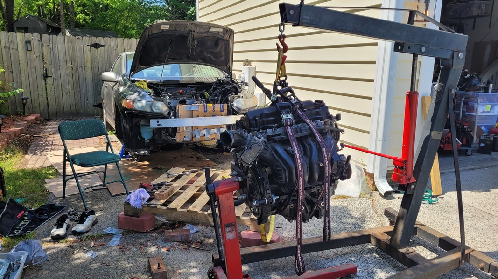Once I was close to being able to pull the blown engine, I set up the donor engine on an engine stand so that I could swap over accessories.
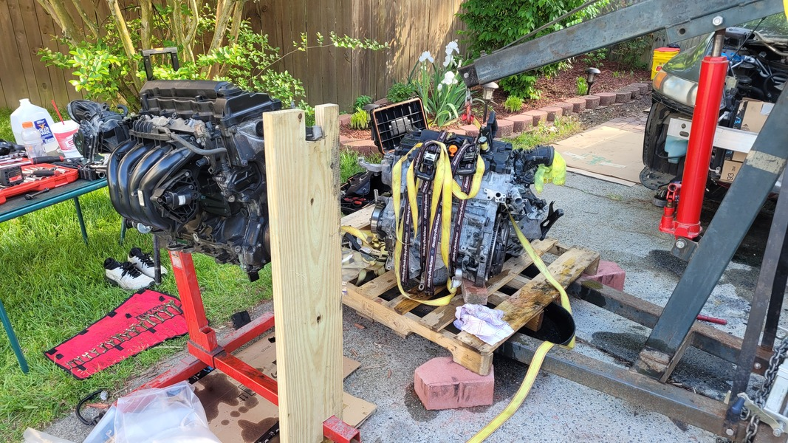Aaaaand it's out! We struggled some, but we were able to pull both the engine and transmission together. This will be useful, as I have to swap over some components since the donor is from an automatic, and the recipient is a manual. Also note the board assisting in holding up the donor engine. I wasn't comfortable with only 4 bolts on one side of the engine, so my Dad fabricated a secondary engine support.
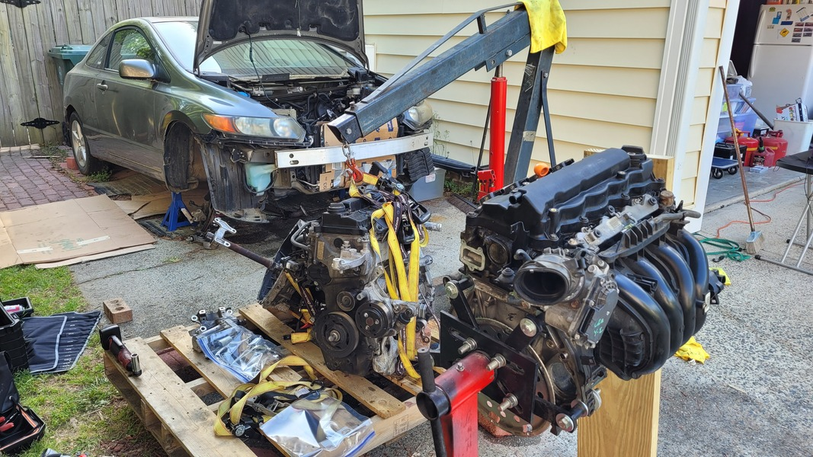Then the swapping begins
I minimized the accessories on the donor engine when we pulled it, and some of the accessories on the recipient are in better condition. So, begins the process of swapping over components.
!!!!!Insert video here of knock knock, looking at rod bearing assembly
Unfortunately, due to rain interrupting nearly every day of work, I was unable to get a good number of images while I was swapping over components. One thing I did notice is that the donor engine had significantly less carbon buildup in the intake passages, potentially indicating a lower-mileage engine from the junkyard compared to the 170,000 mile engine the Civic originally had.
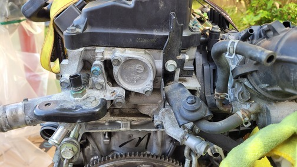 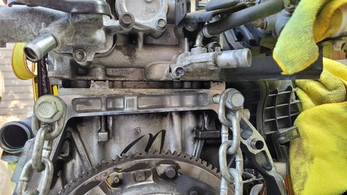 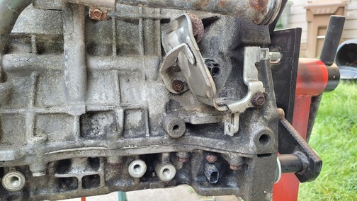Then, once a majority of components were swapped, the oil pan was on, and any sealant applied that needed to be, we mated the trans and the engine for installation.
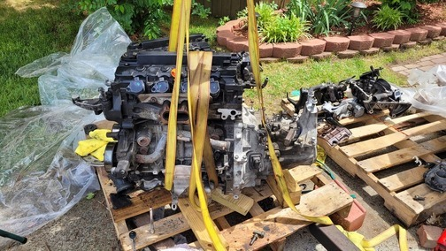The Engine and Trans is In!
Unfortunately the installation of the engine was all hands on deck, and we weren't able to capture any images of the actual engine and transmission installation, but here it is!
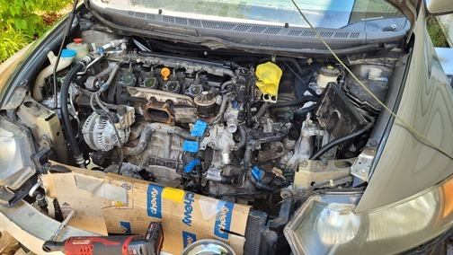I ran the engine for all of 10 seconds to ensure I didn't hear any awful noises - But with the catalytic converter not installed, the engine was quite loud and would mask many less noticeable noises. It certainly sounded better than the old engine!
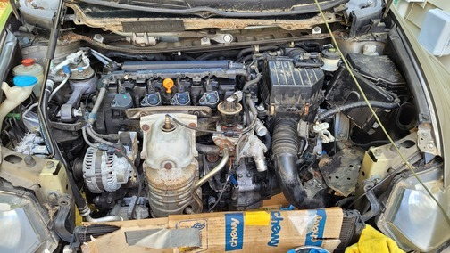Here you can see many of the accessories have been installed, including the alternator, catalytic converter, battery tray, air intake, and more.
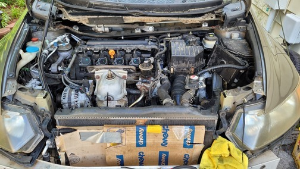Then in goes the radiator, after inspecting to ensure that nothing crawled in while it was out... Here is where I double checked that any bolts and nuts were properly tightened and secured, as well as any hoses for the cooling system, vacuum, and EGR systems.

Here is after I installed the radiator support. Not pictured is all of the brackets in the rear of the engine secured, installation of the power steering pump, and passenger CV axle. Since there will be little risk from here on out, I was able to remove my cardboard protection of the A/C condensor.